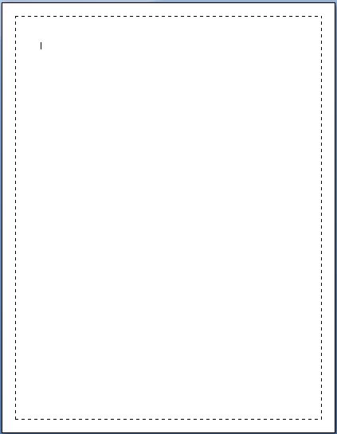
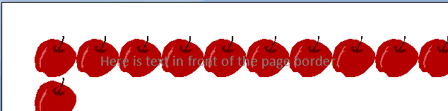

[Table of Contents] [docx version]
WordprocessingML Reference Material - Table of Contents
This element specifies the page borders for each page in this section. Each child element of the pgBorders element specifies a specific of border (left, right, bottom, or top).
[Example: Consider a page that specifies a dashed line border around each of the four sides of the page, as follows:

This page border setting would be specified using the following WordprocessingML:
<w:pgBorders w:offsetFrom="page">
<w:top w:val="dashed" w:sz="4" w:space="24" w:color="auto" />
<w:left w:val="dashed" w:sz="4" w:space="24" w:color="auto" />
<w:bottom w:val="dashed" w:sz="4" w:space="24" w:color="auto" />
<w:right w:val="dashed" w:sz="4" w:space="24" w:color="auto" />
</w:pgBorders>
The four page borders are each uniquely defined by the top, left, bottom, and right elements, respectively. Global settings that define the placement of all page borders are stored on the pgBorders element directly. end example]
|
Parent Elements |
|
Child Elements |
Subclause |
|
bottom (Bottom Border) |
§2.6.2 |
|
left (Left Border) |
§2.6.7 |
|
right (Right Border) |
§2.6.15 |
|
top (Top Border) |
§2.6.21 |
|
Attributes |
Description |
|
display (Pages to Display Page Borders) |
Specifies the pages in this section on which the page border shall be printed.
If this attribute is omitted, then the page borders shall be displayed on all pages in this section (equivalent to a value of allPages).
[Example: Consider a section in a document for which the page border shall only be printed on the first page. This setting is specified using the following WordprocessingML:
<w:pgBorders w:display="firstPage">
The display attribute specifies that only the first page shall display the page border defined for this section. end example]
The possible values for this attribute are defined by the ST_PageBorderDisplay simple type (§2.18.68). |
|
offsetFrom (Page Border Positioning) |
Specifies how the relative positioning of the page borders shall be calculated.
If the value of this attribute is page, then the space attribute on each page border shall be interpreted as the distance from the edge of the page that shall be left before the page border.
If the value of this attribute is text, then the space attribute on each page border shall be interpreted as the distance from the text margins that shall be left before the page border.
[Example: Consider the following WordprocessingML fragment:
<w:pgBorders w:offsetFrom="page">
This fragment specifies that the page borders shall be indented 24 points from the page extents.
This is distinct from the following fragment with identical space attribute values:
<w:pgBorders w:offsetFrom="text">
In this case, the page borders will be offset by 24 points, but in this case, that offset will be calculated relative to the text margins. end example]
The possible values for this attribute are defined by the ST_PageBorderOffset simple type (§2.18.69). |
|
zOrder (Z-Ordering of Page Border) |
Specifies whether the page border is positioned above or below intersecting texts and objects in this document.
[Example: Consider a document in which the page border shall be displayed below any intersecting text as follows:

This setting is specified by setting the zOrder attribute to back, which specifies that the page border shall be display behind all intersecting text and objects. end example]
The possible values for this attribute are defined by the ST_PageBorderZOrder simple type (§2.18.70). |
The following XML Schema fragment defines the contents of this element:
<complexType name="CT_PageBorders">
<sequence>
<element name="top" type="CT_Border" minOccurs="0"/>
<element name="left" type="CT_Border" minOccurs="0"/>
<element name="bottom" type="CT_Border" minOccurs="0"/>
<element name="right" type="CT_Border" minOccurs="0"/>
</sequence>
<attribute name="zOrder" type="ST_PageBorderZOrder" use="optional"/>
<attribute name="display" type="ST_PageBorderDisplay" use="optional"/>
<attribute name="offsetFrom" type="ST_PageBorderOffset" use="optional"/>
</complexType>